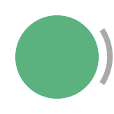

Produces a sequence of analog input frames from an ONIX breakout board.
Inputs & Outputs
Generates a sequence of BreakoutAnalogInputDataFrame.
|
|
 |
|
Properties
| Property | Type | Description |
|---|---|---|
BufferSize
|
int |
Gets or sets the number of samples collected for each channel that are use to create a single BreakoutAnalogInputDataFrame. This property determines the number of analog samples that are buffered for each channel before data is propagated. For instance, if this value is set to 100, then 100 samples, along with corresponding clock values, will be collected from each of the input channels and packed into each BreakoutAnalogInputDataFrame. Because channels are sampled at 100 kHz, this is equivalent to 1 millisecond of data from each channel. |
DataType
|
BreakoutAnalogIODataType |
Gets or sets the data type used to represent analog samples. If S16 is selected, each ADC sample is represented at a signed, twos-complement encoded 16-bit integer. S16 samples can be converted to a voltage using each channels' BreakoutAnalogIOVoltageRange selection. For instance, channel 0 can be converted using InputRange0. When Volts is selected, the voltage conversion is performed automatically and samples are represented as 32-bit floating point voltages. |
DeviceName
|
string |
Gets or sets a unique device name. The device name provides a unique, human-readable identifier that is used to link software elements for configuration, control, and data streaming to hardware. This is often a one-to-one representation of an ONI device, but can also represent abstract ONI device aggregates or virtual devices. |